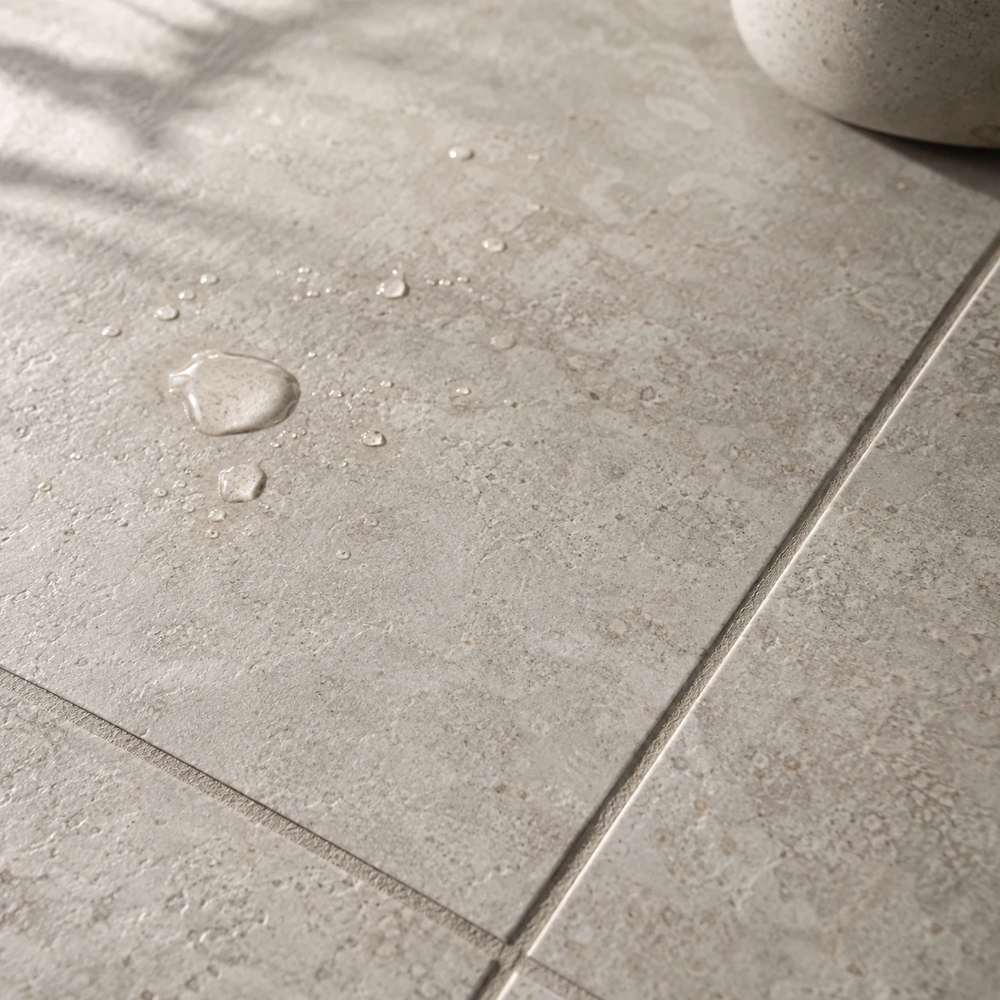
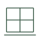
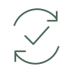

닥터 논슬립 · 미끄럼방지 전문 시공
미끄러운 바닥,
그대로 두실 건가요?
바닥 교체 없이 시작하는 미끄럼방지 시공.
우리 바닥의 샘플에서 먼저 확인하세요.


왜 미끄럼방지 시공일까요?
한 번의 미끄러짐.
사고가 되기 전에.
양손으로 음식을 나르는 주방, 비 오는 날의 로비, 맨발로 걷는 수영장.
한 번의 미끄러짐이 부상과 사고 대응으로 이어질 수 있는 공간입니다.

바닥을 뜯는 대신,
표면을 개선합니다.
전용 약제로 타일·석재의 미세한 표면 상태를 바꿔, 젖은 바닥의 미끄럼 저항을 개선합니다.
코팅층을 덧씌우지 않는 식각 방식입니다.
식각 방식과 시공 과정- 철거 없이
- 기존 바닥
표면 처리 - 일정 맞춤
- 야간·휴무
구역별 작업 - 장기 사용
- 적절한 관리
오래 쓰는 바닥


적절한 관리로 5년 이상의 장기 사용을 목표로 합니다. 적용 여부와 색·광택은 샘플로 확인하며, 유지 기간은 재질·사용 환경과 관리 상태에 따라 달라집니다.
어떤 작업을 하나요?
장비로 세척하고,
표면을 처리하고,
마무리까지 확인합니다.


어디에 필요한가요?
넘어질 뻔했던 곳,
어디였나요?


전국 현장 방문 · 샘플 시공
작은 구역을 먼저.
결정은 확인한 다음.
설명만 듣고 결정하지 않으셔도 됩니다.
우리 바닥에서 변화와 색·광택을 함께 살펴보세요.

시공 전, 많이 묻는 질문
고객센터영업 중인 식당·호텔에서도 시공할 수 있나요?
영업 전후나 야간, 휴무일에 작업하거나 구역을 나누는 방법을 협의합니다. 공간을 이용하는 시간과 우회 동선을 먼저 살펴 현장에 맞는 일정을 계획합니다.
바닥의 색이나 광택이 달라지지는 않나요?
재질과 기존 마감, 처리 조건에 따라 달라질 수 있습니다. 작은 구역의 샘플에서 미끄럼 변화와 색·광택을 함께 확인하고, 본 시공을 선택합니다.
시공한 바닥은 얼마나 오래 사용할 수 있나요?
기존 표면 자체에 작용하는 식각 방식으로, 적절한 관리를 통한 장기 사용을 기대할 수 있습니다. 5년 이상의 사용을 목표로 재질과 환경에 맞는 세척·점검 방법을 안내합니다. 실제 유지 기간은 이용량·마모와 관리 상태에 따라 달라집니다.
자세한 유지관리 안내사진은 공간과 작업을 설명하기 위한 브랜드 이미지입니다.